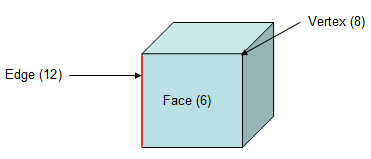

A cube is a region of space formed by six identical square faces joined along their edges. Three edges join at each corner to form a vertex. The cube can also be called a regular hexahedron. It is one of the five regular polyhedrons, which are also sometimes referred to as the Platonic solids.
|
 |
|
| Face | Also called facets or sides. A cube has six faces which are all squares, so each face has four equal sides and all four interior angles are right angles. See Definition of a square. In the figure above, drag the 'explode' slider to see the faces separated for clarity. |
| Edge | A line segment formed where two edges meet. A cube has 12 edges. Because all faces are squares and congruent to each other, all 12 edges are the same length. |
| Vertex | A point formed where three edges meet. A cube has 8 vertices. |
| Face Diagonals | Face diagonals are line segments linking the opposite corners of a face. Each face has two, for a total of 12 in the cube. The length of the face diagonals is given by the formula where s is the length of one side (edge). Since the faces are squares, this is the same as the diagonal of a square. |
| Space Diagonals | Space diagonals are line segments linking the opposite corners of a cube, cutting through its interior. A cube has 4 space diagonals. The length of the space diagonal is given by the formula where s is the length of one side (edge). |
| Volume | The volume is s3 where s is the length of one edge. See Volume of a cube. |
| Surface Area | The surface area of a cube is 6s2 , where s is the length of one edge. See Surface area of a cube. |
| ENTER ANY ONE VALUE | ||
| Side | clear | |
| Volume | clear | |
| Surface area | clear | |
| Face diagonal | clear | |
| Space diagonal | clear | |
Use the calculator above to calculate the properties of a cube.
Enter any one value and the others will be calculated. For example, enter the side length and the volume will be calculated.
Similarly, if you enter the surface area, the side length needed to get that area will be calculated.